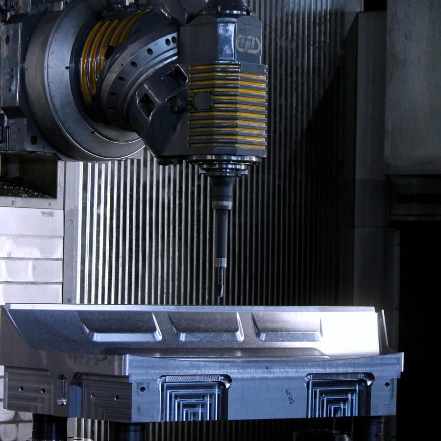

Fräsen
Die Frässparte verfügt über moderne Hochgeschwindigkeits-Bearbeitungszentren mit 3- und 5-Achsen-CNC-Steuerung, geeignet für verschiedene Bearbeitungen und Materialien, von Kunstharz bis zu widerstandsfähigsten Metallen (Gusseisen, Stahl, Aluminium). Arbeitsbereich bis 6.000 × 3.000 × 1.500 mm.